Sokha Tim v. Her Majesty The Queen
This transcript was made with automated artificial intelligence models and its accuracy has not been verified. Review the original webcast here.
Justice Wagner (00:00:01): Good morning, please be seated.
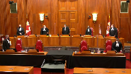
In the case of Sokka Thim against Her Majesty the Queen, for the appellant Sokka Thim, Danielle J. Song and Curtis Theves, for the respondent Her Majesty the Queen, Elisa Frank.
Speaker 1 (00:00:52): Yes, thank you Chief Justices.
Good morning.
Overlapping speakers (00:00:56): Curtis.
Speaker 1 (00:00:56): Steve and I are here to pose this key question to the court.
Can the police arrest someone for an act that they assume is illegal?
And I say that the answer is a resounding no.
Reasonable members of the public would balk at the idea that the police could arrest, handcuff, strip search, and jail a person without a correct and accurate understanding of the law.
Here, based solely on the observation of one pill of a prescription drug, Officer Dalton assumed it was illegal and arrested Mr. Tim, and restrained in cuffs, Mr. Tim was subjected to…
Justice Moldaver (00:01:41): But with respect, I don’t think that’s really fair.
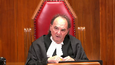
It wasn’t just one pill.
It’s one pill that he saw the accused try and sort of throw down to the floor so that it wouldn’t be found.
It’s one pill that the officer had seen a number of times in prior drug busts.
So I think we have to be fair about this, that it wasn’t just he saw one pill.
Because it was just one pill.
One has to wonder what your client is doing, wanting to hide it, wanting him not to see it.
So I just think we have to be fair on the facts, that’s all.
Speaker 1 (00:02:24): Well, I accept that, Justice Moldaver, but to be fair on the facts, Officer Dalton arrested Mr. Tim solely on the basis that he believed that the pill was gabapentin.
That was his evidence.
And in order to assess reasonable and probable grounds, we have to assess what was in the officer’s mind subjectively, and then assess whether the grounds amount to sufficient grounds from a reasonable person’s perspective.
It’s not, in my submission, the correct analysis to see all of the other grounds that might have been available to the officer in assessing reasonable grounds and those grounds are not actually in the mind of the officer at the time the arrest was affected.
And so the first point that we make is that reasonable grounds have to relate to those facts, not the law.
And if the facts are true, they have to amount to an offense.
And here, given that the facts that Officer Dalton had in his head, that the pill was gabapentin, in my submission, it just cannot amount to reasonable grounds that an offense had been committed.
And the second point then after that point is that none of the searches could be justified in this case without a lawful arrest at first instance.
And then third, the evidence should be excluded in my submission in part because assumptions about the law have no place in policing and the series of intrusions on Mr. Tim’s privacy and dignity just continue to escalate.
And before I get into my submissions, I wanted to make a preliminary report, an important preliminary point, and that’s that the Crown had the onus on critical issues in this case.
All the searches were warrantless, so the Crown had the onus to establish reasonableness under Section 8.
And in the context of Section 8, the Crown had to prove the reasonableness of those searches through a lawful, warrantless arrest.
And then third, my friend has raised the issue of discoverability on appeal, and again, that’s the Crown’s onus.
And so despite these burdens to discharge, the Crown’s case at trial in my submission was underwhelming.
On some points, the Crown left an evidentiary vacuum.
The Crown didn’t even redirect Officer Dalton on important issues such as the strip search, which arose in cross examination.
And so there remains glaring gaps in the evidence that in my submission irreparably compromised the Crown’s position.
Now on the issue of whether a mistake of law can inform reasonable and probable grounds, I say that the case of Kosoyan and STM is a complete answer to the issue.
Where the officer’s belief in the facts is true, if we assume the the truth of those facts, they have to amount to an offence.
So whether a substance is controlled is a question of law, and not fact.
It’s not enough to say that possession of a controlled substance is an offence that exists.
Justice Brown (00:05:32): I’m wondering if I can just pull you back a little, Mr. Song.
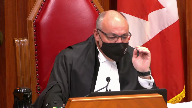
I’m wondering if Cozyan goes that far.
What passage in Cozyan do you rely on for the idea that this court intended to establish a new framework or something for the lawfulness of arrest that would circumvent the reasonable grounds requirement of the criminal code?
Speaker 1 (00:05:56): Well, so if you look at my condensed book at tab 3, page 9, we’ve excerpted some passages from Kusoyan.
And at paragraph 78, Justice Kote basically affirmed Frey and Fedorik saying that the reasonable grounds concept relates to facts and not to the existence in law of the offence in question.
And we have to remember when we look at the facts in Kusoyan, there was a bylaw that prohibited individuals from disobeying a pictogram.
So that there wasn’t existing bylaw, but in the facts of the case the pictogram that depicted the handrail was found to be a warning and not a directive.
And so on that basis…
Justice Brown (00:06:56): So there, she’s dealing with then the existence and law of an offence as opposed to here where we’re dealing with the police officer’s misapplication of the law.
Do you not agree?
Speaker 1 (00:07:11): No, well, if we look at Kasoyan, the offence was non-existent because the pictogram, in fact, did not impose an obligation.
And it was on that basis that the offence was non-existent.
In my submission, it’s no different than when the officer in this case looks at a pill, assumes that it’s gabapentin, or,
sorry, knows that it’s gabapentin, and assumes that it’s an offence.
That it’s an offence.
Well, there’s an offence.
Justice Brown (00:07:46): that there’s an offence that exists.
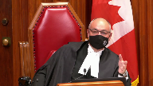
He misapplies it by thinking it applies to this.
Look, I personally find the idea of an arrest based on an error of law being automatically treated as a Section 9 breach, but you run up against 495 of the code, which as you point out quite rightly talks about reasonable grounds, right?
Reasonable grounds for arrest.
So, I mean, I accept that the fact that gabapentin is not a controlled substance might weigh heavily in favour of finding that the arrest was not objectively reasonable, but I’m not sure it’s as automatic as I understand you to be arguing.
Speaker 1 (00:08:35): I’d like to say that Kasoyan did draw a bright line to the extent that an unlawful arrest where there’s a non-existing offence is necessarily unreasonable.
I think I’m paraphrasing a Justice Cote there.
But it’s not a misapprehension of the facts here.
I mean, the Crown in the court below acknowledged, and I think my friend will acknowledge here, that the officer made a mistake of law, not a mistake of fact.
And so if the officer made a mistake of law, the question is, can a mistake of law amount to, can it be reasonable in the context of a reasonable and probable grounds analysis?
And I say it can’t.
It can’t because, for one, it’s not a question of facts.
I mean, if a reasonable grounds concept relates to facts, then a mistake of law cannot provide an excuse.
And the second is that a mistake of law is not generally an accepted defence, as this court even recently said in Barton.
So we can’t afford to police an excuse on the basis of a mistake of law if it’s not available for the accused.
Justice Côté (00:09:53): Here, the Crown considered in appeal, I think, that it was a mistake of law.
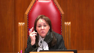
But what do you answer to the argument adopted by the majority of the Court of Appeal and that the Crown is submitting in its factum that the authority of Kozoyan is limited because it was in the context of a civil law case and a civil liability suit?
Speaker 1 (00:10:17): Mm-hmm.
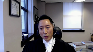
Well, in, Kasoyan was forged in the context of civil liability, but that’s why I respectfully say the question of the lawfulness of the arrest was separate from the issue of civil fault.
There are two stages in the analysis, but in the Section 9 context, if the arrest is unlawful, then it’s automatically arbitrary, and that’s what this court established in Grant.
So this court didn’t do anything different in Kasoyan on the question of whether an arrest is unlawful.
It simply applied the criminal law principles and story about whether there were sufficient, reasonable grounds for the arrest.
But the court went further in Kasoyan to consider sort of the overall, overall circumstances to determine whether the officer there committed a civil fault because his actions were unreasonable.
Justice Moldaver (00:11:21): Is it so black and white?
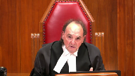
Everybody agrees it’s a mistake of law here, where you and I may be disagreeing as whether it was…
There’s no question in my view with respect that it was an honest mistake.
Was it a reasonable mistake?
You seem to think that any mistake of law that involves an arrest is automatically unreasonable and, therefore, any arrest that’s made is unlawful.
That’s where I’m having trouble.
I agree that the arrest was unlawful.
I’m looking more at the remedy, and I give you this hypothetical.
The law has changed the night before.
The police officer was not aware that a prior law that said something was repealed the day before he makes an arrest.
On the honest and, I would say, potentially, reasonable belief that the law still exists.
Now, unless you’re going to demand the kind of perfection that I kind of hear being spoken about here, why would that go to the remedy?
That’s all I’m getting at.
I’m not suggesting it’s not an unlawful arrest, but…
Overlapping speakers (00:12:40): Yes.
Justice Moldaver (00:12:40): not a difference between an honest mistake and an honest and reasonable mistake.
Speaker 1 (00:12:46): So if I’m giving submissions that suggest sort of an apparent bright line about whether a mistake of law could be reasonable or not, I really am saying that Kosoyan established that.
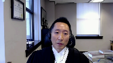
But I do agree with you, Justice Moldava, that the question of whether the officer’s belief was honest, was made in good faith, of course, is subject to the 24-2 analysis.
It’s sort of analogous to what I was saying to Justice Cote, is that there’s a two-stage analysis in charter when there’s an application under Section 24 of the charter.
You have to establish the breach and then establish that the exclusion is appropriate.
But when we’re just asking ourselves whether this arrest was lawful under Section 9, in my submission, a mistake of law cannot enter the calculus and just would run counter to some of the other jurisprudence, including I’ve alluded to Section 25 of the Criminal Code and the courts in the past who have said that a mistake of law cannot justify, sorry, cannot protect an officer from civil liability by resorting to Section 25.
So there’s, if we were to import mistakes of law as permissible in the reasonable and probable grounds calculus, it would, in my submission, create a little bit of incoherence in the common law.
But ultimately, I say that Officer Dalton’s arrest was unlawful because his belief in the facts, if true, didn’t amount to an offence.
And if indeed there was a Section 9 breach, then there were four distinct searches that amounted to Section 8 breaches.
And the Crown concedes the first two if there’s a Section 9 breach.
But I say that there was no independent justification to search the groin area and no independent justification to conduct a strip search.
I mean, the Crown assumes that the search of the groin area was lawful because of ammunition falling out of the leg.
But possession of ammunition in and of itself is not illegal.
And at no time, this is where I stress again the evidentiary gaps, at no time did the officer say that he was conducting any searches for officer safety concerns.
Justice Rowe (00:15:07): Now, if someone is dripping bullets for a pistol, I mean, I’m not sure whether bullets for a pistol as such are illegal, but why would you have bullets for a pistol unless you had a pistol? Right?
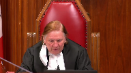
I mean, yeah.
Speaker 1 (00:15:30): Yes.
But what I’m saying, Justice Roe, is that there’s just no evidence about the officer’s subjective belief.
You have to have that in order to have reasonable grounds.
And before we even get to the purpose of the search, there has to be a lawful detention or arrest.
If the initial arrest was unlawful, the question is, if the person is dripping, if it’s raining bullets, the officer could say, you know, there’s exigent circumstances or say that he had safety concerns.
But even then, there has to be a lawful basis for the initial detention or arrest.
Justice Brown (00:16:13): Well, that depends on how closely connected, kind of causally the police officer’s witnessing of the reigning of bullets is to the unlawful arrest.
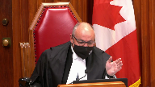
So if we accept here that the arrest was unlawful, the arrest upon the discovery of gabapentin, and I’m rather sympathetic to the idea that it is.
What do you say about the Crown’s argument that there is no, just as a factual basis, there’s no causal connection between bullets dropping out of his pants and the fact that he’s been arrested?
Justice Wagner (00:16:53): Well…
Speaker 1 (00:16:54): So, the Goldheart analysis is not simply about assessing whether there’s a causal connection.

It’s causal, temporal, and contextual.
And indeed, the court can exclude evidence for a distinct charter breach that happens after the discovery of evidence, like a strip search in my submission, like the delay in right to counsel like in Myanmar.
So, in my submission, if this court finds that there was a section nine breach at the outset, there were a series of actions that the officer took that led to the discovery of the drug.
Justice Brown (00:17:35): Well, to the drug, sure, but you say that led to, but that’s conclusory.
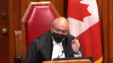
Why should we reach that conclusion that the discovery of the weapons was occasioned by the unlawful arrest?
Because, of course, what occasioned the search three is there’s bullets coming down his leg.
Speaker 1 (00:17:55): But, but there is no, there’s, if, if there was no Section 9 breach, Justice Brown, what was the lawful, what was the lawful basis to have Mr., um, Mr. Tim detain?
Well, we can take causation back to the primeval slime.
If he hadn’t struck the sign, we wouldn’t be here.
Um, if he hadn’t got up and…
No, no, no, no, no, no, no, no, no, no, no, no, no, no, no, no, no, no, no, no, no, no, no, no, no, no, no, no, no, no, no, no, no, no, no, no, no, no, no, no, no, no, no, no, no, no, no, no, no, no, no, no, no, no, no, no, no, no, no, no, no, no, no, no, no, no, no, no, no, no, no, no, no, no, no, no, no, no, no, no, no, no, no, no, no, no, no, no, no, no, no, no, no, no, no, no, no, no, no, no, no, no, no, no, no, no, no, no, no, no, no, no
Justice Brown (00:18:15): in the morning we wouldn’t be here so so tell me about the tell me about the the causal connection just beyond mere you know
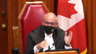
but for his parents having given birth to him right we need we need a little more proximity if I could use the language of a humble torts lawyer
Speaker 1 (00:18:37): Well, there is, like I said, you have to look at context and the temporal connection and the causal connection.
It’s not simply a matter of a but-for test when you deal with Goldheart.
And we can’t deny an individual a remedy simply because we can’t prove beyond, or maybe on a balance of probability, a direct causal connection all the time between the breach and the discovery.
Overlapping speakers (00:19:04): about it.
But it is a balance of probabilities, right? It is.
Speaker 1 (00:19:07): Yes, but I’ll give you an example of Myanmar, which is a case that I had done before this court previously.
There was no causal connection between the discovery of a kilogram of cocaine in the car and the delay of access to council 22 minutes later.
And yet that still resulted in the ability to request a remedy under 24-2 and ultimately an exclusion of that evidence by this court.
So we cannot isolate the Goldheart analysis to simple causation.
Here there was just a sequence of events that led to the discovery of evidence.
And one can’t say that bullets would have rained out of the leg without the officer first having conducted the strip search and rummaging around in the pockets of Mr. Tim.
Overlapping speakers (00:19:54): Who has the burden here?
Speaker 1 (00:19:56): The burden is on the accused to establish that there would be a sufficient connection.
I’ll accept that.
But I’m saying to the court that there is a sufficient connection between the breach and that ultimately the search itself in the groin area without a lawful arrest is itself a breach.
That breach in and of itself justified triggering 24-2.
Justice Rowe (00:20:22): Yeah, but to me, the search in the groin area was after the bullets.
And I think that if this guy’s got bullets coming out of his pant legs, if I was an officer, I’d want to see whether there was a gun there.
Otherwise, the guy could just pull it on, mean it’s all over.
Speaker 1 (00:20:40): right
but the officer’s evidence was that he was uh he was looking well the the evidence was that the officer was conducting the search to look for evidence not for a safety search so let’s assume let’s assume sorry
i think i heard
Justice Jamal (00:20:57): the paragraph quoted from the testimony, paragraph 80 of the dissenting reasons refers to a concern for having missed items and the inference from that is that the it was to preserve evidence but to Justice Roe’s point it could be missed some items because he might have a gun

and I’d be concerned.
I mean isn’t that a reasonable inference based on the testimony?
Speaker 1 (00:21:21): No, but the reasonable inference is that the officer was conducting a search incident to arrest.
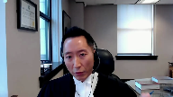
So in his mind, he had the power to look for further evidence.
If there was a Section 9 breach here and the arrest was unlawful, then the only way we can get to a lawful search at the time that the groin was searched is if there was a proper either investigative detention or a different reason for an arrest.
And neither of those exist.
I don’t know.
Justice Brown (00:21:49): So if somebody’s got bullets coming out of their pants, I might conclude from that that perhaps they’ve got something to put those bullets into.
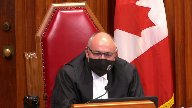
And then it really seems to me to be a very fine line between looking for evidence and personal safety.
I’m with Justice Jamal, I wonder if that’s a reasonable inference to draw here.
Speaker 1 (00:22:10): Well one might be able to say that is a reasonable inference to draw but there has to be a subjective basis for the belief.
The officer has to that this is why I’m saying that in the case of warrantless searches the Crown had the onus to establish a subjective belief.
If there is no evidence of a subjective belief in my submission this court can’t conduct a reasonable and reasonableness analysis on something that didn’t exist at least on the evidentiary record.
Justice Moldaver (00:22:39): Can we change the facts a little bit?
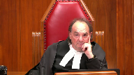
He was detained in terms of the accident, so he’s already under detention that the police are investigating.
That’s a lawful detention.
And then the officer sees him sweep this drug onto the floor, and of course you say he’s negligent thereafter and not following it up to see if it’s a controlled substance.
But the presumption there is that there would be a proper case, I think, for investigative detention in that regard, as opposed to an arrest.
So if there’s an investigative detention, what’s the officer going to do while he goes to the car to check out whether this is a controlled drug or not?
I don’t think he’s going to let the accused or the person involved kind of run around free.
I would have thought he would ask the accused to come with him to the car, in which case the bullets are dropping and here we go.
Is that what this case is going to turn on?
Speaker 1 (00:23:41): Oh, well, Justice Moldaver, investigative detention has to be, the grounds have to arise from a belief that the accused is connected to a particular crime, which is why I say that we don’t agree with Justice Valdez’s conclusion that there was a basis for an investigative detention, even when he saw Gabapentin, because when he saw Gabapentin, if it was a mistake of law, the reasonableness goes out the window, at least from our perspective.
He was detained under the Motor Vehicle, or sorry, the Traffic Safety Act, but if he’s detained under the Traffic Safety Act, there’s no power to search that flows from that.
There has to be a proper investigative detention based on reasonable suspicion that the person is connected to a particular crime.
And if the possession of Gabapentin is not a crime, then in my submission, even an investigation wouldn’t have been lawful.
But what I had said in the factum is that there was a lawful way for the officer to have investigated whether Gabapentin was legal, is that because Pill was in plain view, because Mr. Tim was under detention under the Traffic Safety Act, there was no reason that Mr., and there was another officer also there to assist, Mr. Tim would have remained at the scene, the officer could have taken the Motor Vehicle documents and the Pill back to the vehicle, conduct his Traffic Safety Act investigation, and at the same time investigate whether Gabapentin was in fact illegal.
I see that I have about five minutes left, but I do want to go to the 24-2 analysis.
And again, discoverability is the Crown’s onus.
The Crown argues that there is no evidence that the gun would not have been found but for the Section 9 breach.
But it’s the Crown that has the onus to prove discoverability as is stated in Stillman.
And even though discoverability now, post-Stillman, is not determinative, when there’s no evidence that discoverability in my submission, there’s no impact under Section 24-2.
With respect to the seriousness of the Charter-infringing conduct, we say that the absence of good faith is here where the arrest initially is unreasonable.
The belief in the mistake of, or in belief that Gabapentin was legal was unreasonable.
There was an alternative legal means to investigate, which I’ve discussed, and there was a cumulative effect that would aggravate the seriousness of the Charter-infringing conduct.
That is key here.
We just, in terms of the absence of good faith, there is no good faith when it’s based on an unreasonable error that was as to the scope of police authority.
In my submission here, it was serious for the officer to assume what the law is.
It was tantamount to willful blindness.
I mean, he saw it being traded, but never once did he say that he looked at the CDSA.
And it came from the officer’s own mouth that he assumed that it was illegal.
In my submission, even though it may be honest, the absence of good faith here isn’t because the officer was being deliberate, but because the belief itself was unreasonable.
Thank you.
Justice Jamal (00:27:09): Mr. Song, you don’t take the position that the Section 9 breach was itself sufficient to exclude the evidence.
You rely on the Section 9 breach and then the cumulative effect of the Section 8 breaches.
Is that fair?
I do, yes.
Speaker 1 (00:27:20): Yes, that’s fair, Justice Jamal.
Justice Côté (00:27:22): Mr. Song, on this good faith aspect, you say that there is an absence of good faith, and here the fact that the trial judge found that subjectively the police officer had reasonable grounds.
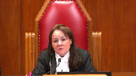
Not objectively, but subjectively.
Can we infer good faith from that?
Speaker 1 (00:27:42): No, because, first of all, I say that’s not reasonable, you can, the finding of fact is he subjectively believed that the Gabapentin was illegal, but the point is that he took no steps to find out whether it was in fact illegal, even from his previous investigations.
He was willfully blind and he assumed it.
We cannot have police officers in my submission, assuming what the law is, when they’re charged with the ability and the authority to enforce laws even with force.
Justice Brown (00:28:18): And I assume on that you’re relying on cases like Buhay that good faith cannot be claimed if a charter violation is committed in violation or in ignorance of the scope of a police officer’s authority.
Speaker 1 (00:28:29): Yes, and Bowen as well, which is at tab 5, page 24 of our…
Overlapping speakers (00:28:34): Yep.
Speaker 1 (00:28:34): of our materials , yes.
Those line of cases all support that.
Justice Côté (00:28:37): For you, every time there is an unlawful arrest, unlawful because of a mistake of law, there can never be good fate.
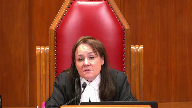
Essentially, if we complete the reasoning, you say the arrest was unlawful because of a mistake of law, so there could not be good fate.
Speaker 1 (00:28:57): Now on the 24-2 analysis, I don’t want to sound like I’m being too black and white about that, Justice Cote.
The facts here, in my submission, support a finding that the process could fail.
Justice Brown (00:29:10): Mr. Song, we’ve talked about instances where the law is uncertain, where there’s uncertainty in the law, but there’s no uncertainty here.
Speaker 1 (00:29:17): There was no uncertainty here and the officer had many opportunities previously to try and clarify whether Gabapentin was illegal instead of making assumptions and in fact in this case he had an opportunity to do that too without breaching Mr. Tim’s charter rights.
He was not a very experienced officer at the time and it cuts both ways but inexperienced here should have called out for additional steps to confirm whether Gabapentin was legal.
Justice Kasirer (00:29:51): Yes, Mr. Song, could you comment to find…
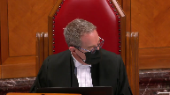
Was there a finding of fact in first instance about the reasonableness of the belief?
I mean, the trial judge…
And I take your point that three years’ experience is not a lot of experience, but do you…
Page eight of the judgment, when he concludes, he’s satisfied that that was objectively reasonable, that is to say the belief, and therefore the arrest was lawful.
Is that a finding of fact that has any bearing on our… Because…
Speaker 1 (00:30:30): the reasonableness of a belief is a question of law this court doesn’t have uh to show deference to a trial judge’s finding and the trial judge made that finding as it was conclusory provided no other than say that the officer just had an honest belief of that because he had previously seen gaba penetrated on the streets but a question of whether something is reasonable is a question of law reasonable and probable grounds in fact is a question of law as this court has said in shepard thank you very much
Justice Wagner (00:31:00): Thank you.
Speaker 2 (00:31:08): Thank you Chief Justice and good morning Justices.
I want to start with a review of the facts.
You’re all clearly familiar with them but this is a situation where the appellant collided with a sign on a busy Calgary street and caused significant damage to his vehicle such that a civilian, a concerned civilian called emergency services concerned that he was attempting to drive away with a damaged vehicle.
About a kilometer away the police officers responded to this call and according to the police officer’s testimony the vehicle appeared inoperable to them.
So this is a situation that required police intervention.
The police had a reason for and were required to be there and when the arresting officer was there lawfully investigating this collision it appeared to him that the suspect had perhaps attempted to flee the scene of the initial collision and he testified that he was unsure if he would even remain on the scene now and that’s the context in which he observed the appellant attempt to conceal a pill that he recognized as a known traded street drug and that is where the officer made his mistake.
He made a mistake that he believed gabapentin to be a controlled substance and he explained how he had come to that belief.
My friend attempts to make a lot of the word assume and there is one point in cross-examination where he uses the word assume but in context what he is saying is after the fact I realized it was mistaken now when I think about why I thought that I made that assumption based on my experience but at the time at the time of the arrest he was not alive to the fact that this was assumption it was simply an erroneous belief that he held that he later once he realized he was an error was able to explain from his experience.
Justice Brown (00:33:02): So is that a good thing or a bad thing, the fact that he didn’t think about it at the time?
Speaker 2 (00:33:10): Well, it’s neither without the context of how we assess it.
So what it is, is a correction of my friend’s assertion that he was alive to the fact that he was unaware of his mistake and that he should have been looking up whether or not Gabapentin was illegal because he was and my friend accuses him of willful blindness.
And that’s that’s the correction here.
A person can’t be willfully blind to something if they’re unaware of the need to be looking into the correction for the error that they’ve made.
And that’s why that’s important.
Overlapping speakers (00:33:46): He wasn’t willful.
Speaker 2 (00:33:47): blind.
Overlapping speakers (00:33:48): That’s fair.
Speaker 2 (00:33:48): So that’s the point when he made this mistake and his mistake was he had made this error.
The question, the ultimate question on this appeal is what is the effect of that error?
And there are two possible legal avenues to assess this question.
The first legal avenue was the one that the trial judge took and the one of the majority of the Court of Appeal and that is that the error here which can be classified as a legal error is assessed at the breach stage in the reasonable grounds for arrest test.
The second possible legal avenue is that we accept that there’s a bright line it’s an automatic breach anytime an error made by an officer in an arrest can be classified as legal officer and then the ultimate the effect of his error is only assessed at the 24-2 stage.
That legal question arises on these facts and should be clarified.
However, in this case the facts support the conclusion that either way the error made by the officer was understandable and reasonable.
Justice Moldaver (00:34:58): Could I interrupt you for one second?
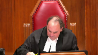
Just to go to paragraph 27 of the Court of Appeal decision, majority.
I just want to be clear on your position on this.
The first about five lines of that quote, you see where it says, considering the entire constellation?
Overlapping speakers (00:35:19): Yes.
Justice Moldaver (00:35:19): Yeah, of events including the appellant may have been fleeing the scene of the accident, please The appellant noticed the pill and tried to hide it
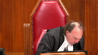
But he’d seen this drug traded amongst people on the street And had arrested people with it in their possession along with other drugs and that the police officer reasonably believed Gavin whatever it is was covered by the CDSA
Now those seem to be factual findings albeit that the Court of Appeal is looking at this
But they go on the Court of Appeal goes to say well therefore the arrest was lawful And speaking for myself.
I have trouble with that
But I’m more interested in the the impact it has on the 24-2 analysis
Overlapping speakers (00:36:07): Mm-hmm
Justice Moldaver (00:36:07): Thank you.
Speaker 2 (00:36:09): Yes, and that’s a good opportunity for me to correct another issue, and that is, at my condensed book at page three is a quotation from page 11 of the transcript, where the officer expresses that at the time he believed the suspect was trying to hide the pill.
And so, when the appellant argues that his arrest was based only on the observation of the pill, that’s incorrect.
It was actually the officer’s testimony that he noticed the appellant was trying to hide the pill at the time.
So that was fairly within the constellation of factual factors.
I believe what you’re asking me is whether or not it was an error for the Court of Appeal to include his reasonable belief that gap of pension was covered in the CDSA is an error.
Legally, is that your question?
Justice Moldaver (00:37:09): I don’t know that, I guess what I’m trying to say is that I, that there appears to be, uh, there was an arrest here that was, in my respectful view, clearly unlawful because there’s no crime.
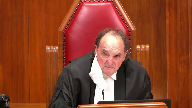
But that brings me, so in other words, the arrest is unlawful and then you go from there.
And so whatever is seized thereafter, subject to some break in the chain at the second part where the bullets start dropping, the evidence seized would be seized unlawfully.
I mean, it would be in breach of the accused charter rates by virtue of unlawful detention and any search that follows from that would necessarily be tainted.
But the question is, under 24-2, how serious is the police officer’s breach here?
Is this a really serious breach?
And the question I have for you is that if the breach is both honest and reasonable in the circumstances, how does that, if at all, attenuate the seriousness of the breach?
That’s a simple question.
Speaker 2 (00:38:20): Thank you for clarifying your question, Justice Moldaver, and I agree that under the 24-2 analysis, if in fact there is a Section 9 breach, it absolutely goes to the first branch of the grant test.
If a mistake made by an officer, and that mistake makes the breach, that mistake in itself is what has created the breach, then the reasonableness and the understandableness of that error goes to good faith.
The officer made a mistake in good faith.
And when the appellant argues that the absence of bad faith doesn’t equate to good faith, that’s absolutely a true statement of law.
But in this case, when we have an understandable and reasonable error of law being made, that goes to positive evidence of good faith, and that’s how it relates to Section 24-2 analysis.
And that goes back to the point I was making.
Regardless of whether you take the majority…
Well, what do you say?
Justice Brown (00:39:14): say about Buhe that says where this court said good faith cannot be claimed if a charter violation is committed on the basis of a police officer’s unreasonable error, well you say it’s reasonable so let’s go on, or ignorance as to the scope of his or her authority.
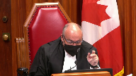
Does that not speak to this set of facts?
Speaker 2 (00:39:39): This is my response to that question, Justice Brown.

In Kosoyan, several times, at paragraph six, at paragraphs 54 and 55 and 57 and 58, the standard required of knowledge is adequate.
Adequate knowledge of the laws.
Police are required to know.
Justice Brown (00:39:57): Read on. Read on.
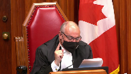
The court also discussed this duty in Grant, Justice Côté writes for all of us.
While, so this is quoting from Grant, while police are not expected to engage in judicial reflection on conflicting precedents, they are rightly expected to know what the law is.
And then it cites to a passage in Lee that says the same thing.
Speaker 2 (00:40:20): Yes that’s correct and that is a true statement of law but what it raises is the question of what is the standard required for that knowledge.
Is that standard one of perfection?
In order to enforce laws in this country are police required to have a perfect encyclopedic knowledge not just of the laws and the regulations?
Well if he sees this he’ll…
Justice Brown (00:40:41): many times as he says he does, might be kind of a good thing to know whether that’s a controlled substance or not.
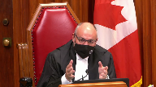
I don’t think this is sort of, you know, overtly demanding.
I would expect that most police officers know whether capapentin is a controlled substance or not.
It doesn’t mean that he was subjectively, you know, you know, subjectively, you know, intent deliberately ignorant, but he was ignorant of something that I would have expected a police officer to know because it is something that he has seen so many times involved in in dealing.
I think that I think that factor cuts the other way in other words.
Well, I apologize.
Yeah, no, no, it’s okay.
I interrupted you.
Speaker 2 (00:41:38): The question that it raises, legally speaking, if Justice Brown, if you conclude that it was unreasonable for him not to know that Gabapentin wasn’t scheduled, that’s your conclusion.
I don’t believe there’s evidence on the record to say how often police encountered this.
He said he had encountered it several other times and that when he had made arrests involved in drugs, people had more than one type of drug and he had seen Gabapentin several times.
Right, and then you’re using that…
Justice Brown (00:42:06): confirmation bias to support a finding of reasonableness and I’m just suggesting it really cuts the other way.
Speaker 2 (00:42:13): And that’s a fair suggestion, but the legal point that I’m making about whether or not a legal error can ever be reasonable is that the standard of knowledge, knowledge of the law cannot be one of perfection.
It isn’t one of perfection.
The standard of knowledge of the law is one of adequate.
Justice Kasirer (00:42:30): Sorry to interrupt, but even if it’s not perfection, the dissenting judge observes that the finding or the conclusion of the trial judge was based on a reference to the police officer’s own three-year experience.
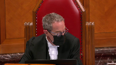
And at paragraph 86 in her dissent, the dissenting judge says that there’s no evidence that he took any reasonable measures or readily available steps to investigate whether the appellant actually possessed a controlled substance.
He assumed the pill was a controlled substance without consulting with any other officer or any other aide or guide readily available to him regarding illegal drugs.
So in other words, it looks like, this is my question, it looks like the trial judge used a subjective measure, even though he used the language of objectivity as well.
And there’s no evidence that the officer did take reasonable measures available to him to verify whether gabapentin was on the list of controlled substances.
Speaker 2 (00:43:48): I’m sorry, I heard what you said, I’m not sure if you have a question for me.
Justice Kasirer (00:43:54): Is that wrong?
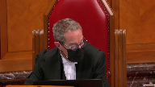
Is the fact that the trial judge based his finding on the officer’s own three-year experience and his assertion that he subjectively believed it to be a controlled substance, and the trial judge did not avert to the reasonable measures that the officer may or may not have been able to take to verify whether gabapentin was on the list is relevant to whether on the facts here this was reasonable.
Speaker 2 (00:44:35): Okay, thank you.
So the question is whether or not the trial judge has conflated the objective standard and the subjective standard based on his assessment of the officer’s evidence.
And my answer to that is that the standard is of the reasonable officer is a modified objective test.
So it is what a reasonable officer in his circumstances, including his training and experience would have done.
So his experience is relevant to the objective test.
So when the trial judge took into consideration his experience, that’s relevant to the objective test.
So it is not an error.
That’s all he took into consideration.
Justice Brown (00:45:10): to look into account.
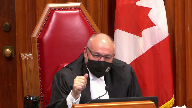
It seems to me that he had kind of overwhelmed the analysis.
But look, you’ve got limited time.
I’d just like to signal to you, you’ll do what you wish, but I would really like to hear from you at some point on your submission regarding kind of the break in the causal chain between searches one and two and searches three and four.
This is the bullets coming down the pants. Okay.
Speaker 2 (00:45:38): I am happy to address that right now.
I think the difficulty I have with the appellant submission on this point is he appears to be arguing that in order for a court to conclude that an officer had justification for the search that the officer had to specifically testify to his subjective belief in creating that search and that’s not accurate.
So an officer isn’t required to specifically testify to every link in his logical chain of thought in forming a search and as as more than one of you justices this morning have observed it doesn’t beg the question that the reason as to why the search of the groin was necessary was obvious on the face of the facts and didn’t require an explanation from this officer.
Justice Cazierer you pointed out earlier that really at paragraph 80 of the decision it says you know his reason his stated reason for the search was looking for evidence that was his specific stated reason for the initial search for the initial for the initial search when he found bullets in the pockets and the phones and the pills and cash he did not state relative to the search of the groin later at the police car that his intention was looking for evidence he said I saw the bullets falling out of his pants I thought I might have missed something and it is
Overlapping speakers (00:47:04): Like a gun.
Speaker 2 (00:47:05): You have like a loaded prohibited weapon concealed in this person’s pants.
It really goes without saying and it does not require, as the appellant suggests, that the officer had specifically testified to that specific link in his logical chain of thought.
Overlapping speakers (00:47:22): Is it relevant, counsel, that he was handcuffed at that stage?
Speaker 2 (00:47:27): I think it could be considered yes
but there are certainly cases where a person who is handcuffed is still able to use deadly force with a weapon that they have concealed on their person
and so it’s it it could be relevant in the consideration but certainly certainly an officer dealing with an unknown suspect on the side of the road who observes bullets falling out of that person’s pants not only can but should ensure the safety of themselves and the public by making sure that there’s no more dangerous weapons involved in the situation.
Justice Kasirer (00:47:55): I guess the other relevance I see, possibly, as being a connection, you say there’s a break in the nexus between the charter breaches and the search for the gun.
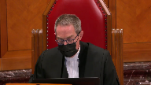
But if he’s being marched back to the cruiser with handcuffs on, isn’t it all part of the same transaction from the initial unlawful arrest?
Speaker 2 (00:48:24): Well, that’s the argument.
Is it a part of that same transaction or not?
And I think an important point not to forget in that analysis is that he was lawfully detained for the collision investigation.
He wasn’t going anywhere, his vehicle was inoperable, and the investigation as to the hit and run was still ongoing.
So I don’t think it’s clear that there’s a causal connection between the fact that he was arrested and handcuffed and the fact that the bullets started falling out of his pants.
He didn’t testify to that.
There’s no direct evidence on that point.
And so yes, it’s a question of the Goldhardt constellation of factors.
All of these factors should be considered.
Yes, he was handcuffed, but there’s no evidence that the fact he was handcuffed is why the bullets were falling out of his pants.
Overlapping speakers (00:49:14): And we do know that he…
Speaker 2 (00:49:16): would still have been on the scene interacting with officers at the time regardless of whether or not he was arrested.
I apologize I think I heard somebody ask a question.
Justice Moldaver (00:49:26): I had just a very quick question for you.
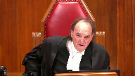
Justice Brown referred you to Bouhé, and he said, well, there is a finding of reasonableness.
What about ignorance of the scope of authority?
And I just like your take on what that phrase, because clearly I would have thought he’s not ignorant.
There’s no suggestion this officer was ignorant, that he had the authority to arrest someone for a non-offence.
That’s the scope of his authority, it seems to me.
And if someone had asked him, do you think it’s within your authority to arrest someone for a non-crime?
I think the answer would have been obvious.
So I think we should be looking more at the reasonableness as opposed to that aspect of the Bouhé test.
Justice Brown (00:50:10): I mean, I guess it depends on how one phrases the question.
Was he ignorant as to the scope of his authority to arrest for possession of Gabapente?
Speaker 2 (00:50:20): And it does matter and that is why I think the distinction is important because it comes down to the degree of the perfection of the officer’s knowledge.
It’s reasonable, it would be unreasonable as Justice Moldaver has suggested for an officer to believe he can arrest somebody for an offense that doesn’t exist ever since Frey and Fedorek, that should be the case.
But it’s not the same level of ignorance to say that an officer doesn’t have a perfect encyclopedic knowledge of every drug on the schedule.
I mean this has broader implications.
Justice Brown (00:50:57): They’re going around in circles, I’m just going to tell you.
But this is a drug that he’s seen out on the beach, right?
We’re not talking about something obscure, right?
And we’re not asking him to decide, you know, to describe the five defences in equity or something like that.
This is something he deals with.
Speaker 2 (00:51:13): We are talking about a principle that has broader implications.
So Justice Brown, it’s a different discussion as to if we assess the legal error at the breach stage, at the reasonable grounds for arrest stage, then that’s where your point is coming in.
Was it actually reasonable for him to have made that error?
That would be a question if we agree that it isn’t a bright line.
But the point I was making is going to whether or not it should be a bright line and the answer to that question is it shouldn’t because otherwise the standard has to be one of perfection and that has broader implications.
And the broader implications are that if an officer doesn’t know every detail of the schedules of prohibited weapons and restricted weapons and he gets the classification wrong upon making an arrest, then the arrest for a prohibited weapon, which was actually a restricted weapon, would automatically become illegal.
Justice Rowe (00:52:07): Now, I’m going to shift the perspective on this, if I might, because I really, really do want to put this to you.
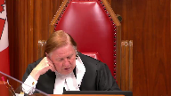
In the majority reasons, at paragraph 30, and I’m just going to read the first sentence, under American constitutional law, a seizure is not unreasonable under the Fourth Amendment of the American Constitution, one adds, not the Canadian Constitution, that’s my words, to continue.
Just because a police officer who made a seizure did so as a result of a mistake of law, provided that it was objectively reasonable.
Pardon me.
Just because a police officer who made a seizure did so as a result of a mistake of law, provided that it was objectively reasonable mistake of law.
And then the authority quoted is from the Supreme Court of the United States.
Is this a proper part of the analysis, and did not the majority misdirect themselves as to the legal framework by relying upon American jurisprudence and reference to the American Constitution and not Canadian jurisprudence and the Canadian Constitution.
Speaker 2 (00:53:39): I don’t think, thank you Justice Roe, I don’t think they misdirected themselves because I don’t believe that the majority of the Court of Appeal of Alberta was relying on this as authority, as legal authority.
My take on this American case is as an analogy, an extra-jurisdictional analogy to what other jurisdictions are doing.
And the reason they might have done that is because this is such an unusual type of case.
As the authorities in Kosoyan agree, it is unusual for this type of mistake to have been made.
It’s rare.
And there are only a few cases, and that leads me to an example for Kosoyan itself.
And in the discussion in Kosoyan, there’s the Ryan and Eau Claire case at paragraph 73 that’s discussed, where the officer arrested the nuns for distributing pamphlets.
And the bylaw was actually prohibiting commercial pamphlets being distributed, not religious pamphlets.
That was an error that the officer made.
In that case, it was found to have been a reasonable error.
And that was the only other example available of this type of error being made that I could find that’s available in the material.
And so it’s an extremely rare situation.
And I think judges and courts should be reluctant, certainly, to find that an error of law is reasonable.
But that doesn’t mean it’s impossible.
And my suggestion is that this is a rare case among rare cases where actually that error was reasonable.
And whether or not the reasonableness of that error is assessed at the breach stage or at the 24-2 stage, it was reasonable based on the officer’s experience.
But the example from the United States, I believe, was included not because it was being used as authority, but because there’s so little authority, because this is a rare type of case, that they were looking for extra judicial examples of what other jurisdictions do with this type of thing, and whether or not the error of law should be looked into.
I think maybe-
Justice Rowe (00:55:38): my colleagues, my brothers and sisters on the Alberta Court of Appeal might look to other jurisdictions like other provinces rather than other countries.
Speaker 2 (00:55:51): Certainly, and I think very likely they would if such examples were available in the jurisprudence in Canada for them to consider.
But I do want to, before my time is completed, to briefly address the question of the unlawful arrest.
And I’d just like to offer a different take on what makes an arrest unlawful based on the authority in Kosoyan.
The appellant argues that Kosoyan is a complete answer, and the Court of Appeal majority says this distinguishable.
And I would like to draw your attention, if I can, to how and why that’s important in making the legal decision of where the reasonableness is considered here.
First of all, at paragraph 41 of Kosoyan, it articulates the test for civil liability for wrongful arrest.
So civil liability for wrongful arrest requires fault, injury, and the causal connection between the two, and those need to be proven on the balance of probabilities.
Now the term unlawful here is being used in a very specific way.
As the appellant has articulated in this test, in the civil test articulated in Kosoyan, there’s two stages of the fault question.
So fault is the first factor of civil liability.
The fault question is assessed in two stages, and we can see that described at paragraph 42 of Kosoyan.
Under Quebec civil law, Article 1457 imposes on every person a duty to abide by the rules and conduct incumbent upon him according to the circumstances, usage, or law, so as to not cause injury to another.
And an extra contractual civil fault occurs where a person who’s endowed with reason fails in this duty by acting in a manner that departs from the conduct of a reasonable, prudent, and diligent person in the same circumstances.
And the analysis of that reasonable person test is analogized to the reasonable person in the reasonable grounds for arrest test, and that is confirmed in Hill.
And so when Kosoyan is analyzing the error committed in that case, they talk about the unlawfulness of the arrest as it relates to the first part of that two-stage test, as it relates to breaching the technical powers available under Article 1457 of the civil law of Quebec.
And so it is the technical unlawfulness, the legal mistake of the error that is being termed and referred to in paragraph 78, for example, that the appellant relies on as the unlawfulness of the arrest.
Justice Brown (00:58:32): I understand that.
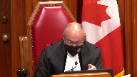
That was an inquiry into civil fault.
I think the Court of Appeal was right in a way in kind of consigning, just describing Kazoyan as, you know, decided under civil law to that extent.
But I’m wondering if it was right to completely dismiss it as completely irrelevant.
On that ground, when you look at what Kazoyan says in very generic terms, it is important that there always be a legal basis for the actions, while police are not expected to engage in judicial reflection and conflicting presence, rightly expected to know what the law is, citing a whack of criminal cases.
Grant, Lee, Sharma, Janes, Kokesh.
So it seems that there’s sort of two things going on in Kazoyan.
There’s the actual disposition, which engages the principles that you’ve been discussing.
But there’s a real kind of general statement about the rule of law and the limits of police authority in circumstances that seem to be at issue here.
Yeah, and I agree exactly with what you’re saying.
At least that’s what I thought I was siding on.
Speaker 2 (00:59:46): Well, the point that the point that I’m making is that when the conclusions are made in Cazoyne about an unlawful arrest, they’re talking about the first part of that false stage.
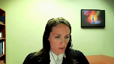
They’re not talking about the entire false stage, and the entire false stage is what’s compared to the reasonable grounds for arrest test, and that’s confirmed in Hill, because in Hill the concern was whether or not police can be liable for their actions against a subject, and there was concern about eroding the reasonable probable ground standard, and there was concern about a chilling effect upon police arrests if they could be civilly liable, and the court confirmed in Hill, no, we’re not changing the reasonable grounds for arrest.
It’s encompassed, and it is consistent with the fault aspect here, and so it’s the the entire fault aspect, and the entire fault aspect doesn’t assume that any mistake of law is unreasonable.
In fact, at paragraph, I have this in my notes.
Justice Brown (01:00:44): You may be right, but these considerations, and in a way I kind of echo Justice Moldover on this point, but kind of from the flip side of the coin, these considerations may go to the first branch of Grant.
Speaker 2 (01:00:56): Right they may and if they do then clearly all of the same arguments I’m making I would like to apply to the first grant of grant and and I could be mistaken but my understanding is that um the appellant has more or less conceded that just because an officer is mistaken in law it doesn’t automatically make his mistake unreasonable and and that doesn’t automatically make his um
Overlapping speakers (01:01:19): Well, he hasn’t conceded it this morning, so…
Speaker 2 (01:01:22): Right, right.
So he agrees.
So the first factor, the reasonableness of the officer’s mistake, the honesty of his mistake, weighs in favour of inclusion.
And that’s where that could be considered if you disagree with me about the fact that there’s an automatic breach at the arrest stage based on the analysis of Senator Kosoyan.
And I see that I’m out of time.
Thank you.
Thank you very much.
Thank you for your questions.
Justice Wagner (01:01:44): Thank you.
A reply, Mr. Son?
Speaker 1 (01:01:48): Thank you Chief Justice.
So in reply, my friend has said that it was obvious that the
Overlapping speakers (01:01:56): All right.
Speaker 1 (01:01:56): officer had officer safety concerns at the time that he searched Mr. Tim, Mr. Tim’s groin area, but in my submission that betrays the arguments that the Crown made in the court below and in this court and the Crown consistently has said that the officer could have searched for officer safety concerns, not that the officer did have officer safety concerns.
That’s really important in my submission if this court is of the view that the safety concern at the time the bullets rained down from the leg and that’s not the evidence but the bullets came down from the pant leg.
It’s very important in my submission whether in fact the Crown can reasonably argue that the officer did in fact have officer safety concerns even if he didn’t testify to that whether the evidence establishes that.
It doesn’t in my submission.
Justice Moldaver (01:02:49): Wouldn’t the officers be negligent if they didn’t do a further search in these circumstances?
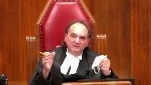
If, for example, there was a gun and it went off and either killed the accused or injured the accused or injured an officer or injured a citizen, you know, an innocent bystander, surely to goodness the officers would be so derelict in their duty for not taking another look.
So you can call it, you know, oh they didn’t say they were concerned about officer safety, but the inference is, you know, just to me the opposite approach is they’d just be totally negligent in that case.
Speaker 1 (01:03:34): Well, but the issue of negligence in my submission might be relevant to 24-2, but on the question of whether there was a Section 9 and Section 8 breach in my submission, we have to be clear.
If the evidence does not establish that the officer did in fact, whether it’s through subjective or actual testimony out of his mouth or whether the circumstances established that it was in his mind, we can’t get to that point where we can say that that was the purpose for which he searched.
It’s very clear in the authorities that we cannot, even if there is an alternative lawful purpose that was available to the officer, if the officer did not rely on it, it can’t establish reasonable grounds.
Aside from the safety issue, before we can even search for safety, there has to be a lawful arrest or a lawful investigative detention.
There is no such thing as an officer safety search pursuant and incident to TSA detention.
So that’s what I was getting at earlier.
And I would just say as well, I’d ask the court not to let this good faith issue overwhelm the 24-2 analysis.
There’s much more that we have said with respect to 24-2.
Mr. Tim should not have been disrobed standing there and probed without a lawful arrest and reasonable grounds that the strip search was necessary.
So subject to any questions, those are my submissions in reply.
Justice Wagner (01:04:59): I’d like to thank all Council for their submissions.
The Court will take the case under advisement.
And the Court is adjourned until tomorrow morning at 10.30.
Thank you.